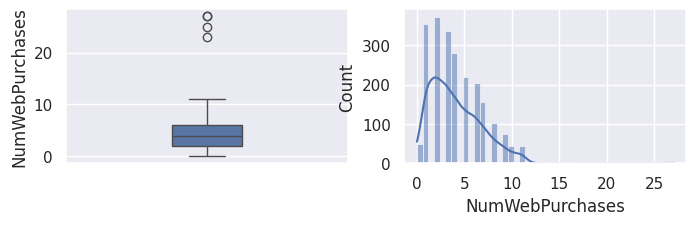
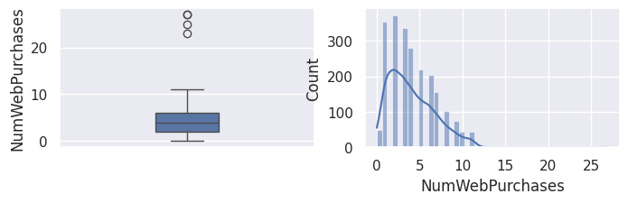

Analyse exploratoire#
Analyse et segmentation de clientèle d’un magasin avec campagnes de marketing Jules EXBRAYAT & Abdenour MADANI
Import des outils / jeu de données#
1import matplotlib.pyplot as plt
2import pandas as pd
3import seaborn as sns
4
5from src.config import data_folder
6from src.constants import var_categoriques_original as var_categoriques
7from src.constants import var_numeriques
8from src.utils import init_notebook
1init_notebook()
1df = pd.read_csv(
2 f"{data_folder}/marketing_campaign.csv",
3 sep="\t",
4 index_col="ID",
5 parse_dates=True,
6)
Présentation#
Problématique#
Dans le rôle d’analystes de données en mission pour un magasin de produits alimentaires, nous chercherons à :
Réaliser une segmentation de la clientèle de l’entreprise (clustering),
Prédire l’efficacité d’une future campagne de marketing (classification binaire)
Tableau. Liste de nos objectifs
Mission |
Type de tâche |
|
|---|---|---|
Objectif 1 |
Segmentation de la clientèle |
Clustering non supervisé |
Objectif 2 |
Prédiction d’acceptation à une campagne marketing |
Classification binaire |
Tableau. Plan de la présentation
| :— | :— |
| Exploration des données | Présentation des variables
Première visualisation des variables |
| Pré-traitement des données | Nettoyage des données
Création de variables (Feature Engineering) |
| Visualisation des données | Visualisation en fonction de la variable cible |
| Analyse factorielle | ACP
AFC
ACM |
| ANOVA | Vérification des hypothèses
Test d’ANOVA |
| Segmentation de clientèle | Comparaison de différents algorithmes de clusters
Visualisation des clusters
Description des profils “type” de clients |
| Prédiction d’acceptation
de campagne marketing | Comparaison de différents modèles de classification
Équilibrage des classes
Diagnostic du meilleur modèle
Conclusion sur l’efficacité de prédiction |
Jeu de données#
1## todo : ajouter une description / une partie pour parler du jeu de données
2## "Ce jeu de données contient le profil de plusieurs clients d'une enseigne de grande distribution" \
3## "Il contient les données de juillet 2012 à juillet 2014" \
4## "Nous disposons des ventes en Vin, etc"
Présentation des variables#
1df.head()
| Year_Birth | Education | Marital_Status | Income | Kidhome | Teenhome | Dt_Customer | Recency | MntWines | MntFruits | ... | NumWebVisitsMonth | AcceptedCmp3 | AcceptedCmp4 | AcceptedCmp5 | AcceptedCmp1 | AcceptedCmp2 | Complain | Z_CostContact | Z_Revenue | Response | |
|---|---|---|---|---|---|---|---|---|---|---|---|---|---|---|---|---|---|---|---|---|---|
| ID | |||||||||||||||||||||
| 5524 | 1957 | Graduation | Single | 58138.0 | 0 | 0 | 04-09-2012 | 58 | 635 | 88 | ... | 7 | 0 | 0 | 0 | 0 | 0 | 0 | 3 | 11 | 1 |
| 2174 | 1954 | Graduation | Single | 46344.0 | 1 | 1 | 08-03-2014 | 38 | 11 | 1 | ... | 5 | 0 | 0 | 0 | 0 | 0 | 0 | 3 | 11 | 0 |
| 4141 | 1965 | Graduation | Together | 71613.0 | 0 | 0 | 21-08-2013 | 26 | 426 | 49 | ... | 4 | 0 | 0 | 0 | 0 | 0 | 0 | 3 | 11 | 0 |
| 6182 | 1984 | Graduation | Together | 26646.0 | 1 | 0 | 10-02-2014 | 26 | 11 | 4 | ... | 6 | 0 | 0 | 0 | 0 | 0 | 0 | 3 | 11 | 0 |
| 5324 | 1981 | PhD | Married | 58293.0 | 1 | 0 | 19-01-2014 | 94 | 173 | 43 | ... | 5 | 0 | 0 | 0 | 0 | 0 | 0 | 3 | 11 | 0 |
5 rows × 28 columns
1print(f"Il y a {df.shape[1]} variables et {df.shape[0]} individus.")
Il y a 28 variables et 2240 individus.
Variables#
ID: identifiant du client
Year_Birth: numérique, année de naissance du client
Education: qualitative, niveau d’éducation
Marital_Status: qualitative, statut marital
Income: numérique, revenu annuel en $
Kidhome: numérique, nombre d’enfants en bas-âge
Teenhome: numérique, nombre d’enfants adolescents
Dt_Customer: date, date à laquelle le client s’est inscrit
Recency: numérique, nombre de jours depuis le dernier achat
Complain: catégorique, est-ce que le client s’est plaint les 2 dernières années (0 ou 1)
Products#
MntWines: numérique, argent dépensé les 2 dernières années en vin
MntFruits: numérique, argent dépensé les 2 dernières années en fruits
MntMeatProducts: numérique, argent dépensé les 2 dernières années en viande
MntFishProducts: numérique, argent dépensé les 2 dernières années en poisson
MntSweetProducts: numérique, argent dépensé les 2 dernières années en bonbons / gâteaux
MntGoldProds: numérique, argent dépensé les 2 dernières années en bijoux / or
Promotion#
NumDealsPurchases: numérique, nombre d’achats effectués avec une promotion
AcceptedCmp1: catégorique, le client a-t-il acheté durant la campagne promotionnelle numéro 1 (1 s’il a acheté, 0 sinon)
AcceptedCmp2: pareil pour la campagne numéro 2
AcceptedCmp3: pareil pour la campagne numéro 3
AcceptedCmp4: pareil pour la campagne numéro 4
AcceptedCmp5: pareil pour la campagne numéro 5
Response: catégorique, 1 si le client a acheté durant la dernière campagne, 0 sinon (potentielle variable à prédire)
Place#
NumWebPurchases: numérique, nombre d’achats effectués sur le site Internet
NumCatalogPurchases: numérique, nombre d’achats effectués via le catalogue
NumStorePurchases: numérique, nombre d’achats effectués en magasin
NumWebVisitsMonth: numérique, nombre de visites sur le site Internet le dernier mois
Nous séparons les variables numériques des variables catégoriques pour plus de commodités.
Nous convertissons les variables catégoriques en type category. (Nous les convertissons au préalable en type string car cela facilite l’affichage de la légende avec Matplotlib et Seaborn)
1df[var_categoriques] = df[var_categoriques].astype(str).astype("category")
1## todo: convertir en int la variable Income (qui est float)
Nous convertissons les variables au format date.
1df["Dt_Customer"] = pd.to_datetime(df["Dt_Customer"], format="%d-%m-%Y")
1df.info()
<class 'pandas.core.frame.DataFrame'>
Int64Index: 2240 entries, 5524 to 9405
Data columns (total 28 columns):
# Column Non-Null Count Dtype
--- ------ -------------- -----
0 Year_Birth 2240 non-null int64
1 Education 2240 non-null category
2 Marital_Status 2240 non-null category
3 Income 2216 non-null float64
4 Kidhome 2240 non-null category
5 Teenhome 2240 non-null category
6 Dt_Customer 2240 non-null datetime64[ns]
7 Recency 2240 non-null int64
8 MntWines 2240 non-null int64
9 MntFruits 2240 non-null int64
10 MntMeatProducts 2240 non-null int64
11 MntFishProducts 2240 non-null int64
12 MntSweetProducts 2240 non-null int64
13 MntGoldProds 2240 non-null int64
14 NumDealsPurchases 2240 non-null int64
15 NumWebPurchases 2240 non-null int64
16 NumCatalogPurchases 2240 non-null int64
17 NumStorePurchases 2240 non-null int64
18 NumWebVisitsMonth 2240 non-null int64
19 AcceptedCmp3 2240 non-null category
20 AcceptedCmp4 2240 non-null category
21 AcceptedCmp5 2240 non-null category
22 AcceptedCmp1 2240 non-null category
23 AcceptedCmp2 2240 non-null category
24 Complain 2240 non-null category
25 Z_CostContact 2240 non-null int64
26 Z_Revenue 2240 non-null int64
27 Response 2240 non-null category
dtypes: category(11), datetime64[ns](1), float64(1), int64(15)
memory usage: 340.7 KB
Nous avons 11 variables catégoriques, 16 variables quantitatives (dont 15 entières) ainsi qu’une variable de type date.
Découverte des données#
Analyse univariée#
1df[var_numeriques].describe()
| Year_Birth | Income | Recency | MntWines | MntFruits | MntMeatProducts | MntFishProducts | MntSweetProducts | MntGoldProds | NumDealsPurchases | NumWebPurchases | NumCatalogPurchases | NumStorePurchases | NumWebVisitsMonth | |
|---|---|---|---|---|---|---|---|---|---|---|---|---|---|---|
| count | 2240.000000 | 2216.000000 | 2240.000000 | 2240.000000 | 2240.000000 | 2240.000000 | 2240.000000 | 2240.000000 | 2240.000000 | 2240.000000 | 2240.000000 | 2240.000000 | 2240.000000 | 2240.000000 |
| mean | 1968.805804 | 52247.251354 | 49.109375 | 303.935714 | 26.302232 | 166.950000 | 37.525446 | 27.062946 | 44.021875 | 2.325000 | 4.084821 | 2.662054 | 5.790179 | 5.316518 |
| std | 11.984069 | 25173.076661 | 28.962453 | 336.597393 | 39.773434 | 225.715373 | 54.628979 | 41.280498 | 52.167439 | 1.932238 | 2.778714 | 2.923101 | 3.250958 | 2.426645 |
| min | 1893.000000 | 1730.000000 | 0.000000 | 0.000000 | 0.000000 | 0.000000 | 0.000000 | 0.000000 | 0.000000 | 0.000000 | 0.000000 | 0.000000 | 0.000000 | 0.000000 |
| 25% | 1959.000000 | 35303.000000 | 24.000000 | 23.750000 | 1.000000 | 16.000000 | 3.000000 | 1.000000 | 9.000000 | 1.000000 | 2.000000 | 0.000000 | 3.000000 | 3.000000 |
| 50% | 1970.000000 | 51381.500000 | 49.000000 | 173.500000 | 8.000000 | 67.000000 | 12.000000 | 8.000000 | 24.000000 | 2.000000 | 4.000000 | 2.000000 | 5.000000 | 6.000000 |
| 75% | 1977.000000 | 68522.000000 | 74.000000 | 504.250000 | 33.000000 | 232.000000 | 50.000000 | 33.000000 | 56.000000 | 3.000000 | 6.000000 | 4.000000 | 8.000000 | 7.000000 |
| max | 1996.000000 | 666666.000000 | 99.000000 | 1493.000000 | 199.000000 | 1725.000000 | 259.000000 | 263.000000 | 362.000000 | 15.000000 | 27.000000 | 28.000000 | 13.000000 | 20.000000 |
1df[var_categoriques].describe()
| Education | Marital_Status | Kidhome | Teenhome | Complain | AcceptedCmp1 | AcceptedCmp2 | AcceptedCmp3 | AcceptedCmp4 | AcceptedCmp5 | Response | |
|---|---|---|---|---|---|---|---|---|---|---|---|
| count | 2240 | 2240 | 2240 | 2240 | 2240 | 2240 | 2240 | 2240 | 2240 | 2240 | 2240 |
| unique | 5 | 8 | 3 | 3 | 2 | 2 | 2 | 2 | 2 | 2 | 2 |
| top | Graduation | Married | 0 | 0 | 0 | 0 | 0 | 0 | 0 | 0 | 0 |
| freq | 1127 | 864 | 1293 | 1158 | 2219 | 2096 | 2210 | 2077 | 2073 | 2077 | 1906 |
1## todo: commenter
Visualisation#
Variables numériques#
1for var in var_numeriques:
2 _, ax = plt.subplots(1, 2, figsize=(8, 2))
3 sns.boxplot(df[var], width=0.25, ax=ax[0])
4 sns.histplot(df[var], kde=True, ax=ax[1])
5 plt.show()
 


1## todo: commenter les distributions et boxplots
1plt.figure(figsize=(8, 8))
2sns.heatmap(
3 df[var_numeriques].corr()[df[var_numeriques].corr().abs() > 0.5],
4 annot=True,
5 cmap="BrBG",
6 linewidths=0.5,
7 vmax=1,
8 vmin=-1,
9)
<Axes: >
1## todo: commenter la matrice de corrélation
1_, ax = plt.subplots(1, 2, figsize=(15, 4))
2
3ax[0].set_title("Nombre de valeurs présentes")
4df.notna().sum()[var_numeriques].plot.barh(ax=ax[0])
5
6ax[1].set_title("Valeurs manquantes")
7sns.heatmap(df[var_numeriques].isna(), cbar=False, ax=ax[1])
<Axes: title={'center': 'Valeurs manquantes'}, ylabel='ID'>
Nous observons qu’il n’y a quasiment pas de valeurs manquantes parmi les variables numériques.
Variables catégoriques#
1for var in var_categoriques:
2 if df[var].nunique() > 3:
3 sns.histplot(y=df[var])
4 else:
5 plt.figure(figsize=(4, 2))
6 sns.histplot(df[var], shrink=0.3)
7 plt.show()
1df[
2 df[var_categoriques].columns[df[var_categoriques].nunique() > 3]
3].value_counts().plot(kind="bar")
<Axes: xlabel='Education,Marital_Status'>
1## todo: commenter
Valeurs manquantes#
1_, ax = plt.subplots(1, 2, figsize=(15, 4))
2
3ax[0].set_title("Nombre de valeurs présentes")
4df.notna().sum()[var_categoriques].plot.barh(ax=ax[0])
5
6ax[1].set_title("Valeurs manquantes")
7sns.heatmap(df[var_categoriques].isna(), cbar=False, ax=ax[1])
<Axes: title={'center': 'Valeurs manquantes'}, ylabel='ID'>
Nous observons l’absence de valeurs manquantes parmi les variables catégoriques.
Dates#
1## todo
1df["Dt_Customer"].hist(bins=50)
<Axes: >
Sauvegarde du Dataframe#
1df.to_csv(f"{data_folder}/data.csv")